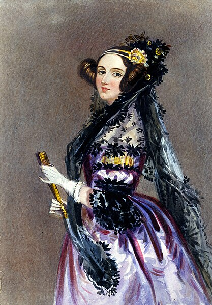

Ada Lovelace, mathématicienne britannique du XIXe siècle, est considérée comme la première programmeuse de l'histoire pour avoir écrit le premier algorithme destiné à être exécuté par une machine, la machine analytique de Chalers Babbage, ce qui en fait une pionière visionnaire de l'informatique moderne.
Le nom de l'école Ada Tech School s'inspire de cette mathématicienne.
En quelques points